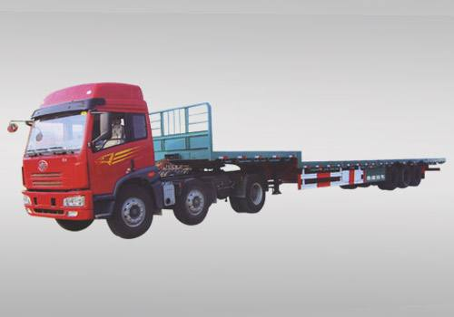
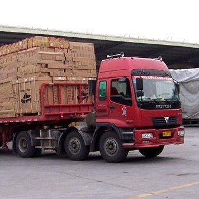

深圳、东莞调车货运信息部，深圳回程车，深圳调车价格，配货站，返程车，回头车，专业调车。
恒运达提供深圳、东莞至国内100多个城市返程车回头货车配货服务。价格便宜、速度快是回程车运输的优点。用回程车运输，价格要便宜20%左右。而且回程车装好货就发车，不用中转、再装卸，同一部车完成提货、长途运输和送货，既避免了货物多次转车造成的货损又缩短了到货时间。

恒运达自建有货车运输平台，能在线实时查看司机方位、空闲状态，能够合理调配各货车运输资源，为货主和司机带来沟通便利。恒运达依靠母公司志强集团，历经20载风雨，它已在深圳的运输行业中脱颖而出，拥有庞大的车队、宽阔的仓库、完善的管理机制、高瞻远瞩的决策，更有一批充满活力和智慧的员工。随着设备先进、功能强大、运作高效的服务体系的建立和完善，我们的社会提供着更好的空运、海运、陆运（公路、铁路、集装箱、火车皮、零担）。恒运达调车迅速快捷，能在1小时内有效响应调车需求，调车前无需付定金，装车成功后才结算，保证了您的货物运输安全。
